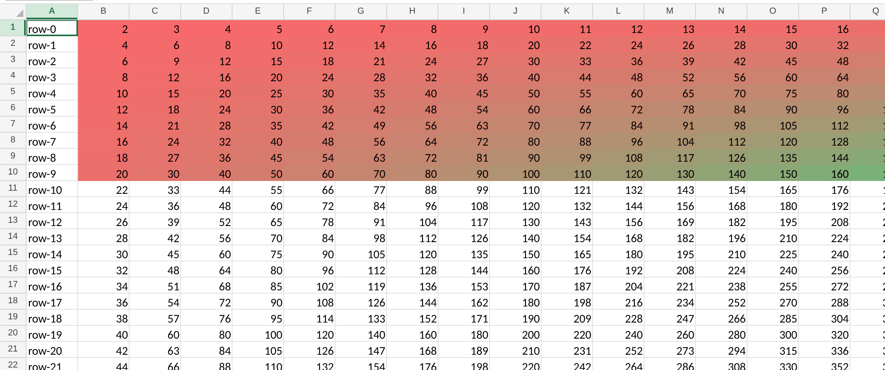
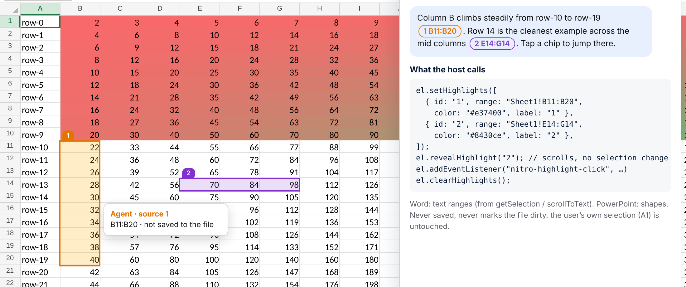
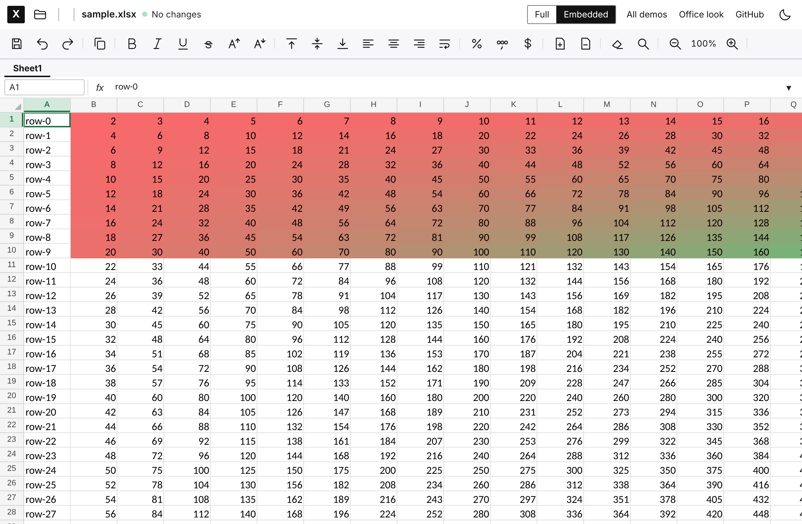
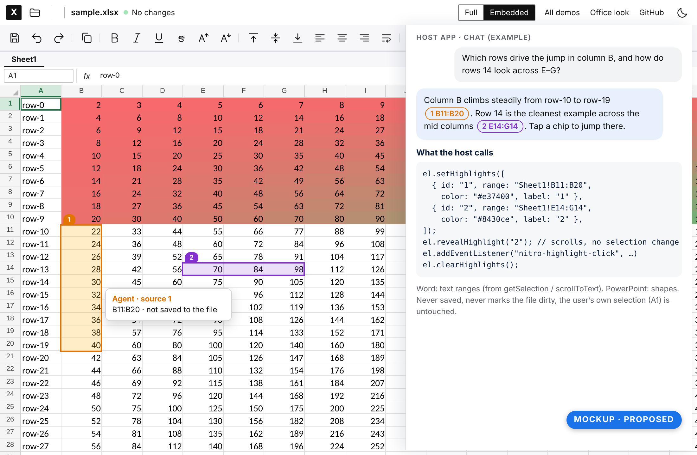

Let host apps highlight cells, text or shapes (for example AI citations) without touching the file
Approve: tap 👍 on the issue · Decline: tap 👎
Close-up of the change




Full screen


Today (embedded workbook): a host can move the selection or edit cell formatting, but has no way to mark a range temporarily. Pointing at 'B11:B20' means stealing the user's selection or dirtying the file.


Mockup: the host's chat panel cites two ranges. Nitro paints them as numbered, coloured highlights over the grid (B11:B20 amber, E14:G14 violet), with a hover card. The user's own selection (A1) is untouched and the file stays 'No changes'.
Tap an image to open it full size.
Why
When Nitro sits inside a chat app with an AI agent, the agent's answers point at specific cells, sentences or shapes, and users need to see exactly what it means. Today the only tools are the selection (which the user owns) and real formatting (which changes the file). A highlight layer that is never saved is how code editors (decorations) and PDF viewers (annotations) solve this, and it reuses the getSelection/setPosition addresses Nitro already has.
Definition of done
- el.setHighlights([{ id, range | textRange | shapeId, color, label }]) paints numbered highlights in xlsx (ranges, any sheet), docx (text ranges from getSelection/scrollToText) and pptx (shapes); clearHighlights() and per-id removal work.
- revealHighlight(id) scrolls/switches sheet, page or slide to show it without changing the user's selection or focus.
- Clicking a highlight fires nitro-highlight-click with its id; React exposes the same via the handle and an onHighlightClick prop.
- Highlights are never saved, never mark the document dirty (el.dirty stays false, save() bytes unchanged) and survive reload(bytes) when their address is still valid.
- Playwright tests cover all three formats, zoom, frozen panes and reload; TypeScript types and README section added; bundle-budget and all required checks green.
Approve: tap 👍 on the issue · Decline: tap 👎